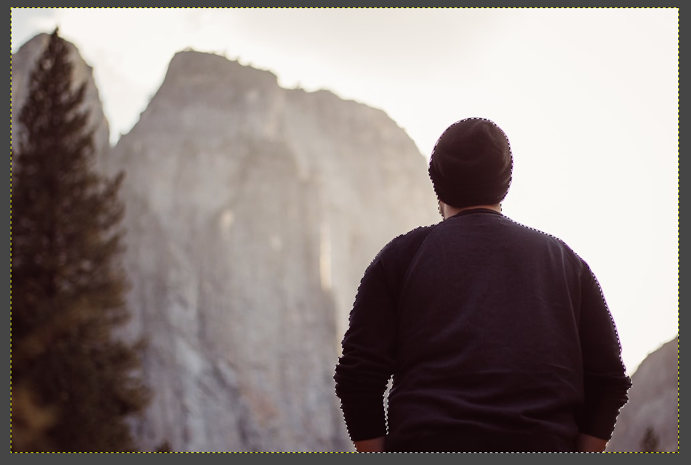
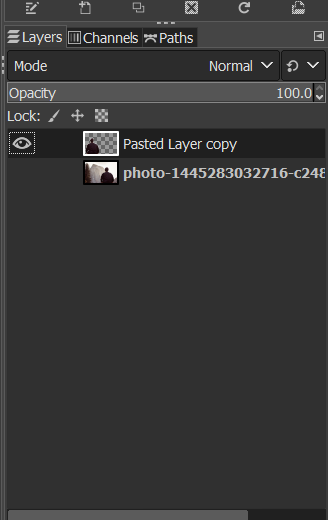
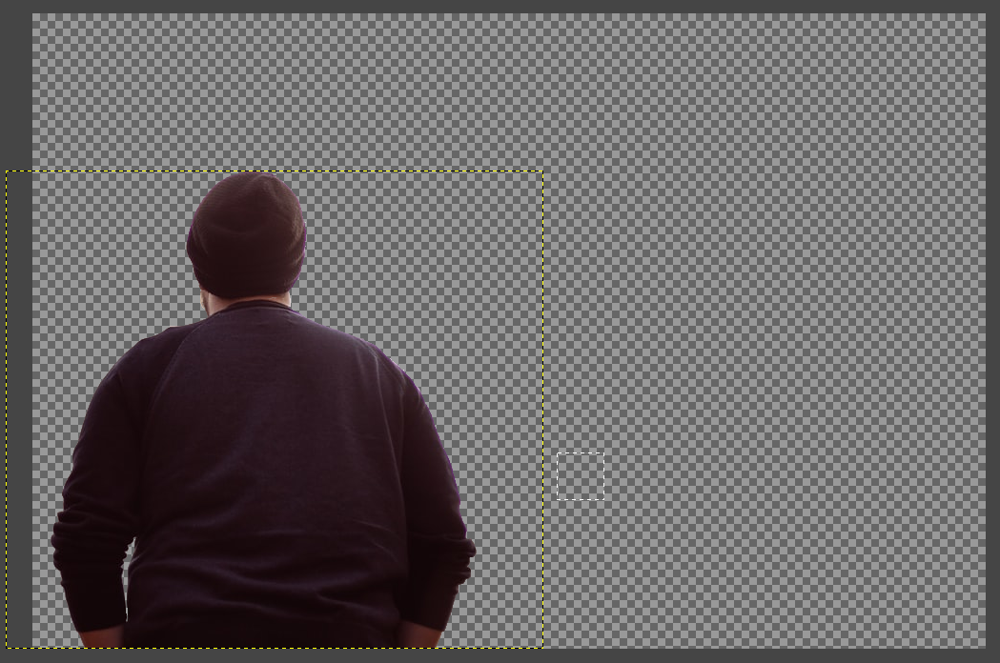

There are 2 kinds of computer graphics: Raster and Vectors. Raster images deal with pixels, where images are represented with a certain number of pixels in length and height. This images become fuzzy as you zoom in as the dots increase in size, and it is possible to see the individual dots if you zoom in close enough. They are mostly used in photos and images, and some common formats for Rasters include JPG (or JPEG), PNG and GIF. Rasters are used by software such as Adobe photoshop, Gimp and Microsoft Paint
Vectors images, on the other hand, uses paths, which are mathematical function or algorithm, where a line would be represented by two points and an equation to connect the two points to form a line. This means that there are no fuzziness in the image no matter how much you zoom in into the picture, which gives Vectors an advantage over Rasters. This makes them good for logo, signs and Visual Communications. Some common formats for Vectors are STEP and SVG, and they are used by software such as Adobe Illustrator and Ink scape.
Using GIMP
GIMP is a free raster graphic editing software, similar to that of Adobe Photoshop. This week, we were tasked to remove the background from a photo and replace it with a seaside view. This were the photos I chosen:
| Photo: | Seaside View: |
|---|---|
- I started by working on the subject. I first used the Fuzzy Select Tool to select the general shape of the man, and tweak the selection with the lasso tool by including certain parts that I missed by holding SHIFT, and excluding certain parts that is part of the background by holding CTRL. 
- Before deleting the background, I first duplicated the layer that contains the photo, so that I have the original image below the edited version. 
- I deleted the background from the 2nd layer by inversing the selection to get a layer with the cropped image. 
- With the cropped image of the subject, I copied it to another file that has the seaside view. I then did some small recolouring and shadowing so as to ensure that the picture looks part of the image since the subject was darker and more saturated than the background, before adding some lighting on this right shoulder.
(the original layer visibility is turned off)